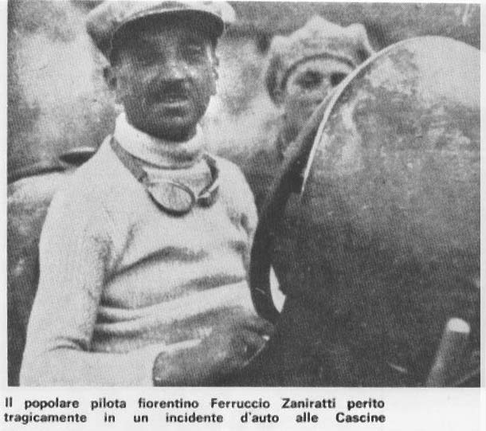

Página histórica preservada em captura arquivística.
Os principais sucessos da sua carreira de piloto
foram dois:
(1924) - IV
Circuito del Montenero: foi o 2° lugar correndo com um “Bianchi
20”.
(1925) - Circuito
del Mugello: venceu a corrida pilotando um “Bugatti 22”,
pela categoria "voiturette". Melhor do que ele naquela competição
foi apenas o grande Materassi, que correu, porém, com um carro de
categoria superior.

O popular piloto florentino Ferruccio
Zaniratti, que morreu infelizmente num acidente de carro as "Cascine"
(perto de Florença).
Ferruccio foi casado com Elvira
Bigoni, nascida em 25/9/1898 em Copparo (província de Ferrara),
filha de Pietro Bigoni e Andreotti Lucia Ida; ela era portanto mais nova do
marido de 15 anos.
O casal teve dois filhos: Giovanni
e Franco, ambos também
pilotos de carros.
Por sua senhoria e amabilidade, Ferruccio obteve
uma grande popularidade e foi colocado entre os melhores pilotos da região
Toscana, junto com o conde Brilli-Peri, o conde Giulio Masetti e o senhor
Emilio Materassi, como foi atestado numa imagem
comemorativa [página não recuperada no acervo]. Seu filho Giovanni foi juntado na mesma imagem, depois do
seu falecimento.
Ferruccio morreu no dia 25 de Janeiro de 1928, aos
44 anos, por um acidente de carro, durante um teste de um carro no Parque
das Cascine. Ele deixou sua esposa Elvira, quando ela tinha uns 30 anos, e
seus filhos Giovanni e Franco. Ao funeral, celebrado na Sé da
cidade, participaram todas as autoridades civis e militares de Florença,
como está documentado na imprensa.
ÁLBUM:
Para ampliar a foto clique sobre ela.
[imagem histórica não recuperada: ../Foto/MiniFerrGiov.gif (imagem comemorativa)] [página não recuperada no acervo]